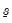
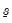

Let and

denote OLS results based on the prior sample. If , where

is the number of coefficients per equation, then the mapping
EViews follows the common practice of requiring 
to be diagonal. Under this restriction, the prior on

cannot be inverse Wishart. Instead, we have
where the prior on the 
-th diagonal element is given by
The notation and

are as they were defined in the unrestricted case. It can be shown that the posterior full conditional for

is
where and are as they were defined in the unrestricted case. Conditioning on other diagonal elements is suppressed in the notation; notice that the diagonal elements of

are conditionally independent in any case.


 ,
,  , ,
, ,  , and . Users set prior hyper-parameters through the six scalar quantities
, and . Users set prior hyper-parameters through the six scalar quantities  , ,
, ,  ,
,  ,
,  , and .
, and .  is the prior sample size,
is the prior sample size,  is a scaling factor controlling the prior variance of
is a scaling factor controlling the prior variance of  ,
,  and
and  are prior scaling factors for
are prior scaling factors for  and
and  , respectively, and and
, respectively, and and  are prior degrees of freedom parameters.
are prior degrees of freedom parameters. observations of the estimation sample for the purpose of specifying the prior distribution. The way in which the scalar quantities map to the original prior hyper-parameters depends on whether a prior sample is present.
observations of the estimation sample for the purpose of specifying the prior distribution. The way in which the scalar quantities map to the original prior hyper-parameters depends on whether a prior sample is present. (e.g., ) returns an error.
(e.g., ) returns an error.